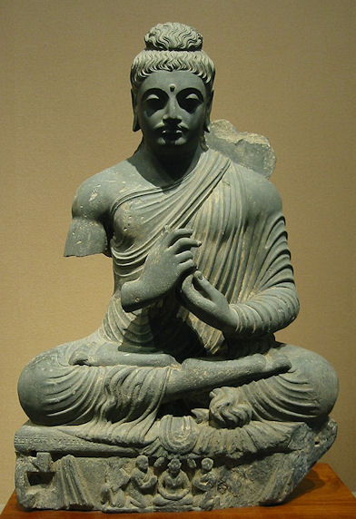

mailto:payer@payer.de
Zitierweise | cite as:
Payer, Alois <1944 - >: Sanskritkurs. -- 12. Lektion 12. -- Fassung vom 2008-11-30. -- URL: http://www.payer.de/sanskritkurs/lektion12.htm
Erstmals hier publiziert: 2008-11-30
Überarbeitungen:
Anlass: Lehrveranstaltungen 1980 - 1984
©opyright: Dieser Text steht der Allgemeinheit zur Verfügung. Eine Verwertung in Publikationen, die über übliche Zitate hinausgeht, bedarf der ausdrücklichen Genehmigung des Verfassers
Dieser Text ist Teil der Abteilung Sanskrit von Tüpfli's Global Village Library
Falls Sie die diakritischen Zeichen nicht dargestellt bekommen, installieren Sie eine Schrift mit Diakritika wie z.B. Tahoma.
Die Devanāgarī-Zeichen sind in Unicode kodiert. Sie benötigen also eine Unicode-Devanāgarī-Schrift.
Eine Möglichkeit, Passivsätze der Vergangenheit zu bilden, ist die Konstruktion mit dem sog. Partizip Perfekt Passiv (PPP).
| In Wirklichkeit ist das PPP kein echtes Partizip, da es nicht von einem Tempusstamm gebildet wird. Es ist vielmehr eine Nominalbildung zur Wurzel mit dem Primärsuffix -ta bzw. -na. Deshalb spricht man in der indischen Grammatik vom Suffix kta. |
|
Agens (kartṛ) im Instrumentalis (tṛtīyā) -- direktes Objekt (karman) im Nominativ (prathamā) -- Partizip Perfekt Passiv Das PPP stimmt in diesem Fall mit dem Objekt in Zahl, Fall und Geschlecht überein. Ein Hilfsverb ("sein") ist nicht nötig. z.B. sādhunā svarga āptaḥ = साधुना स्वर्ग आप्तः = "(Vom Heiligen wurde ein Himmel erlangt) = Der Heilige hat einen Himmel erlangt." brāhmaṇena devīṣṭā = ब्राह्मणेन देवीष्टा = "(Vom Brahmanen wurde die Göttin mit einem Opfer verehrt) = Der Brahmane hat die Göttin mit einem Opfer verehrt."
|
|
Agens (kartṛ) im Nominativ (prathamā) -- Partizip Perfekt Passiv In diesem Fall stimmt das PPP mit dem Agens in Zahl, Fall und Geschlecht überein. Das Partizip Perfekt "Passiv" hat bei intransitiven Verben (Verben ohne direktes Objekt) und Verben der Bewegung aktive Bedeutung. z.B. kṣatriyā nagaraṃ gatā = क्षत्रिया नगरं गता = "Die Kṣatriyafrau ist in die Stadt gegangen." |
|
Agens (kartṛ) im Instrumentalis (tṛtīyā) -- PPP im Nominativ Singular Neutrum z.B. kṣatriyeṇa (nagaraṃ) gatam = क्षत्रियेण (नगरं) गतम् = "(Vom Kṣatriya wurde (in die Stadt) gegangen) = Der Kṣatriya ist (in die Stadt) gegangen." Die Konstruktion nach Schema II ist viel seltener als die Konstruktion nach Schema I. |
Während also das sog. "Partizip Perfekt Passiv" für transitive Verben in erster Linie passive Bedeutung hat (āpta = "erreicht (worden)") und für intransitive Verben und Verben der Bewegung aktive Bedeutung (gata = "gegangen"), gibt es einige Verben, bei denen das PPP sowohl aktive als auch passive Bedeutung haben kann:
z.B.
| Es kommen folgende Bildungsweisen vor (zu
jeder Wurzel ist jeweils ihr PPP zu lernen!): (meist) tiefstufige Wurzel
Die Femininstämme lauten: -tā, -itā, -nā; das Neutrum flektiert wie phala n. |
aniṭ = "ohne (an-) dem Suffix vorangestelltes (-ṭ) i"
| Ohne Bindevokal bildet man das PPP im
Allgemeinen von vokalisch auslautenden Wurzeln sowie vielen anderen
Wurzeln, ohne dass man eine Regel dafür angeben könnte, bei wie
strukturierten Wurzeln der Bindevokal auftrtitt oder nicht. Eine Liste der aniṭ-Wurzeln bei Kielhorn, Grammatik § 298. |
Beispiele:
Wurzel PPP (kta) bhū 1P
भूbhū-ta
भूतsmṛ 1P
स्मृsmṛ-ta
स्मृतnṛt 4P
नृत्nṛt-ta
नृत्तnī 1U
नीnī-ta
नीतman 4Ā
मन्ma-ta (*mn-ta)
मतsu 5U
सुsu-ta
सुतgam 1P
गम्ga-ta (« *gm-ta)
गतji 1P
जिji-ta
जितśru 5P
श्रुśru-ta
श्रुतkṛ 8U
कृkṛ-ta
कृतtan 8U
तन्ta-ta (« *tn-ta)
ततiṣ 6P
इष्iṣ-ṭa
इष्ट
seṭ = sa-iṭ = "mit (sa-) dem Suffix vorangestelltem (-ṭ) i"
Beispiele:
Wurzel PPP (kta) kup 4P
कुप्kup-i-ta
कुपितkhād 1P
खाद्khād-i-ta
खादितrakṣ 1P
रक्ष्rakṣ-i-ta
रक्षितvad 1P
वद्ud-i-ta (« *vd-i-ta)
उदित
Bei aniṭ-Bildungen sind folgende Gesetze der Lautverbindung im Wort zu beachten. Diese Gesetze sind für das Verständnis der gesamten Sanskrit-Formenlehre sehr wichtig.
1. k, t, p vor stimmlosem Verschlusslaut
(z.B. t, th) bleiben unverändert:
2. ct wird durch kt = क्त् ersetzt:
3. śt wird durch ṣṭ = ष्ट् ersetzt:
4. stimmhafter unaspirierter Verschlusslaut - außer j - wird vor stimmlosem Laut durch den ihm enstprechenden stimmlosen unaspirierten Laut ersetzt:
5. jt wird durch kt oder ṣṭ ersetzt (nicht fakultativ!):
6. Stimmhafter aspirierter Verschlusslaut + stimmloser Verschlusslaut » stimmhafter unaspirierter Verschlusslaut + stimmhafter aspirierter Verschlusslaut (Bartholomaesches Aspiratengesetz:
7. h-t wird ersetzt durch ḍh mit Dehnung eines vorhergehenden i bzw. u; oder durch gdh. Vor einem solchen ḍh wird a durch o, seltener durch ā, ersetzt:
|
budh 4 Ā (budhyate) / 1 U (bodhati), PPP buddha बुध् बुध्यते बोधति बुद्ध : erwachen, zur Erkenntnis erwachen, erkennen; PPP buddha 3 erwacht, daher Buddha = "der Erwachte" (nicht: der Erleuchtete)

Abb.: गौतमो बुद्धः
Gandhāra (गन्धार), 1./2. Jhdt n. Chr.
[Bildquelle: Wikipedia, GNU FDLicense]
dah 1 P (dahati), PPP dagdha दह् दहति दग्ध : (etwas) verbrennen
sah 1 Ā (sahate), PPP soḍha सह् सहते सोढ : bewältigen, ertragen, geduldig ertragen = verzeihen
mṛga m. मृग : Wildtier
davon:
mārga m. मार्ग : Weg (Wege waren oft die Wildwechsel)
Abb.: मार्गः, Goa (गोंय)
[Bildquelle: vm2827. --
http://www.flickr.com/photos/vm2827/2536957533/. -- Zugriff am 2008-11-30.
--

 Creative
Commons Lizenz Share alike (Namensnennung)]
Creative
Commons Lizenz Share alike (Namensnennung)]
api अपि : auch (nachgestellt)
Zur 6. Präsensklasse werden von den einheimischen Grammatikern einige Wurzeln gerechnet, die den Präsensstamm mit Nasalinfix und Themavokal a bilden, z.B.:
muc 6 U (mu-ñ-c-a-ti), PPP mukta मुच् मुञ्चति मुक्त : losmachen, loslassen, befreien; vom Kreislauf der Wiedergeburten (saṃsāra m.) befreien = erlösen
sic 6 U (si-ñ-c-a-ti), PPP sikta सिच् सिञ्चति सिक्त : beträufeln
Zur Wortbildung:
muc: mokṣa m. मोक्ष : Loslösung, Befreiung, Erlösung
sic + abhi-: abhiṣeka m. अभिषेक : Besprengung eines Königs bei der Königsweihe, Königsweihe
budh:
bodhi m./f. बोधि : das Erwachen (wodurch ein Buddha oder Jina zur erlösenden Einsicht gelangt)
Abb.: महावीरो जिनः
manuskript, Gujarat (ગુજરાત),
ca. 1411 n. Chr.
[Bildquelle: Wikipedia, Public domain]
buddhi f. (budh + -ti) बुद्धि : Erkenntnis, Erkenntnisorgan.
Wurzel Passiv Präsens
3. sg. IndikativPPP aś 5Ā
अश्aśyate
अश्यतेaṣṭa
अष्टāp 5P
आप्āpyate
आप्यतेāpta
आप्तiṣ 6P
इष्iṣyate
इष्यतेiṣṭa
इष्टkup 4P
कुप्kupyate
कुप्यतेkupita
कुपितkṛ 8U
कृkriyate
क्रियतेkṛta
कृतkṛṣ 1P, kṛṣ 6U
कृष्kṛṣyate
कृष्यतेkṛṣṭa
कृष्टkrudh 4P
क्रुध्krudhyate
क्रुध्यतेkruddha
क्रुद्धkhād 1P
खाद्khādyate
खाद्यतेkhādita
खादितgam 1P
गम्gamyate
गम्यतेgata
गतji 1P
जिjīyate
जीयतेjita
जितtan 8U
तन्tāyate / tanyate
तायते तन्यतेtata
ततdah 1P
दह्dahyate
दह्यतेdagdha
दग्धdṛś
दृश्dṛśyate
दृश्यतेdṛṣṭa
दृष्टnī 1U
नीnīyate
नीयतेnīta
नीतnṛt 4P
नृत्nṛtyate
नृत्यतेnṛtta
नृत्तpaś 4P
पश्(dṛśyate)
दृश्यते(dṛṣṭa)
दृष्टpracch 6P (eigtl. praś)
प्रच्छ् प्रश्pṛcchyate
पृच्छ्यतेpṛṣ-ṭa
पृष्टbudh 1U, 4Ā
बुध्budhyate
बुध्यतेbuddha
बुद्धbhū 1P
भूbhūyate
भूयतेbhūta
भूतman 4Ā
मन्manyate
मन्यतेmata
मतmuc 6U
मुच्mucyate
मुच्यतेmukta
मुक्तmuh 4P
मुह्muhyate
मुह्यतेmugdha / mūḍha
मुग्ध मूढyaj 1U
यज्ijyate
इज्यतेiṣṭa
इष्टyudh 4Ā
युध्yudhyate
युध्यतेyuddha
युद्धrakṣ 1P
रक्ष्rakṣyate
रक्ष्यतेrakṣita
रक्षितlabh 1Ā
लभ्labhyate
लभ्यतेlabdha
लब्धlubh 4P
लुभ्lubhyate
लुभ्यतेlubdha
लुब्धvad 1P
वद्udyate
उद्यतेudita
उदितviś 6P
विश्viśyate
विश्यतेviṣṭa
विष्टśru 5P
श्रुśrūyate
श्रूयतेśruta
श्रुतsah 1Ā
सह्sahyate
सह्यतेsoḍha
सोढsic 6U
सिच्sicyate
सिच्यतेsikta
सिक्तsu 5U
सुsūyate
सूयतेsuta
सुतsṛj 6P
सृज्sṛjyate
सृज्यतेsṛṣṭa
सृष्टsmṛ 1P
स्मृsmaryate
स्मर्यतेsmṛta
स्मृत
A) Bilden Sie aus den Aktivsätzen von Lektion 7, Übung A mit dem PPP Passivsätze der Vergangenheit, bei intransitiven Verben und Verben der Bewegung Aktivsätze der Vergangenheit.
B) Bilden Sie die entsprechenden PPPs zu den Verbformen von Lektion 10, Übung A. Beachten Sie dabei, dass einer Form wie sṛjati PPPs in allen drei Geschlechtern entsprechen.
C) Setzen Sie die Sätze von Lektion 10, Übung C passiv in die Vergangenheit.
Zu Lektion 13